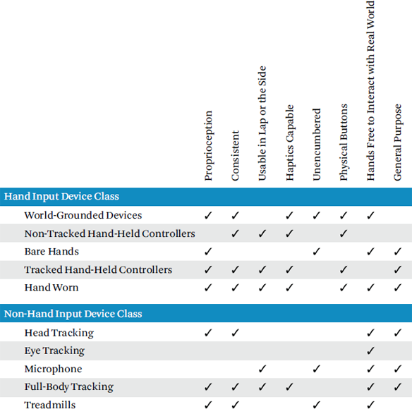

Input devices are the physical tools/hardware used to convey information to the application and to interact with the virtual environment. Some interaction techniques work more or less across different input devices whereas other techniques work only with input devices that have specific characteristics. Thus, appropriately choosing input hardware that best fits the application’s interaction techniques is an important design decision (or, conversely, designing and implementing interaction techniques depends upon available input hardware).
This chapter describes some general characteristics of input devices and then describes the primary classes of input devices.
Input devices can be very different, and the characteristics of each should be considered when choosing hardware and designing interactions.
The most obvious characteristics to a new VR user are the basic shape and size of the input device. The shape and size has more to do with just how the controller looks and feels in the hand. Large hand-held devices are primarily controlled by large muscle groups of the shoulder, elbow, and wrist, whereas smaller hand-held devices utilize smaller and faster muscle groups in the fingers [Bowman et al. 2004]. Smaller devices can also decrease clutching—the releasing and regrasping of an object in order to complete a task due to not being able to complete it in a single motion (such as a wrench). Gloves also use these smaller muscle groups and have the advantage of being able to freely touch and feel other items.
Input devices are often classified by the number of degrees of freedom (DoF) they report. Degrees of freedom (DoF) are the number of dimensions that an input device is capable of manipulating (also see Section 25.2.3). Devices range from a single DoF (e.g., an analog trigger), to 6 DoF that measure full 3D translation (up/down, left/right, forward/backward) and rotation (roll, pitch, and yaw), to full hand or body tracking with many DoFs. A traditional mouse, joystick, trackball, and touchpad (a rotatable ball that is essentially an upside-down mouse) are examples of 2 DoF devices. VR hand tracking should have a minimum of 6 DoF (multiple points tracked on the hand have more than 6 DoF). For a majority of active VR experiences, one or more 6 DoF hand-held controllers is often the most appropriate choice. For some simple tasks only requiring navigation and no direct interaction, a non-tracked hand-held controller is good enough.
Relative input devices measure the differences between the current and last measurement. Mice, trackballs, and inertial trackers are examples of relative devices. Relative devices drift over time and thus are not nulling compliant (Section 25.2.5). Although limited, the Nintendo Wii proved relative devices can work well for natural interactions under some circumstances if the applications are carefully designed. VR relative devices typically use inertial measurement units (IMUs) that have the advantage of having a higher update rate (e.g., 1,000 Hz) and faster response (e.g., 1 ms) than absolute measurements. Absolute input devices sense pose relative to a constant point of reference independent of past measurements and are nulling compliant. Hybrid tracking systems fuse both relative and absolute trackers to provide the advantages of both. VR head and hand tracking should sense pose via absolute measurements (although relative devices can arguably estimate absolute pose of the hands from modeling the constraints imposed by the physicality of the arms and hand).
Integral input devices enable users to control all DoFs simultaneously from a single motion (a single composition) whereas separable input devices contain at least one DoF that cannot be controlled simultaneously from a single motion (two or more distinct compositions). A gamepad with two different analog sticks is an example of a separable device. A 2D device that enables control of more than two dimensions via mode switching is also an example of a separable device. VR hand tracking should be integral.
Isometric input devices measure pressure or force that contains no or little actual movement. Isotonic input devices measure deflection from a center point and may or may not have some resistance. Mice are isotonic input devices. Joysticks can be either isotonic or isometric. Isotonic input devices are best for controlling position, whereas isometric input devices are best for controlling rates such as navigation speed. An isometric joystick, for example, works well for controlling velocity (i.e., hold to continue moving).
Buttons control one DoF via pushing with a finger and typically take on one of two states (e.g., pushed or not pushed) although some buttons can take on analog values (also known as analog triggers). Buttons are often used to change modes, to select and object, or to start an action. Although buttons can be useful for VR applications, too many buttons can lead to confusion and error—especially when the button-mapping functionality is unclear or inconsistent (although attaching labels to virtual controllers can help—see Figure 26.3 as an example). Consider the capabilities and intuitiveness of desktop applications that are controlled via no more than three buttons on a mouse.
There is a debate between bare-hand system (Section 27.2.5) and hand-held controller (Sections 27.2.2 and 27.2.3) advocates as to the utility of buttons. For example, Microsoft Kinect and Leap Motion developers believe buttons are a primitive and unnatural form of input whereas Playstation Move and Sixense Stem developers believe buttons are an essential part of game play. Like any great debate, the answer is “it depends” [Jerald et al. 2012]. Buttons can be abstracted to indirectly trigger nearly any action, but this abstraction can cause a disconnect between the user and the application. Buttons are most effective when an action is binary, when the action needs to occur often, when reliability is required, and when physical feedback to the user is essential. Buttons are also ideal for time-sensitive actions, since very little time is required for the physical action (i.e., an entire dynamic gesture does not need to be completed in order to register the action). Gestures can be slower and more fatiguing than button presses, particularly in command-intensive tasks such as modeling or radiology. Natural buttonless hand manipulation is most effective for providing a sense of realism and presence, when abstraction is not appropriate, or when detailed tracking of the entire hand is required.
Unencumbered input devices do not require physical hardware to be held or worn. Such systems are implemented with camera systems. Thus no “suit-up” time is required (although calibration might be necessary). Unencumbered systems can also reduce hygiene issues (Section 14.4) since a physical device is not passed between users. Non-encumbrance is not always a design goal; holding something physically in the hand can add to the sense of presence (Section 3.2.3); consider holding a controller in the hand vs. not holding a controller in the hand for a shooting or golf experience.
Some devices enable one to touch the real world in natural ways without the device getting in the way. Bare-hand tracking systems (i.e., camera systems) and gloves are the most common examples of this. Held devices and world-grounded devices (Section 27.2.1) must be released before the hand can fully interact with other physical objects. In such cases, the physical devices should be tracked and rendered in the virtual world so the user can reach out to grab them again.
Device reliability is the extent to which an input device can consistently work within the user’s entire personal space (and a larger volume if the user is expected to physically move around). Devices should ideally have 100% reliability anywhere the user can reach with no loss in tracking acquisition. Reliability should carefully be considered when choosing an input device as unreliable devices can result in frustration, fatigue (e.g., due to having to hold the hand high and in front of the body; Section 14.1), increased cognitive load (e.g., because the user must think about holding the device in a certain way), breaks-in-presence (Section 4.2), and reduced performance.
Unreliable tracking can be due to multiple reasons and divided into two sets of factors: (1) implementation limitations and (2) inherent physical limitations. An inherent physical limitation is the best a device will ever be able to achieve given an optimal engineering solution/implementation. Some devices cannot possibly provide 100% reliability no matter what the engineering effort. A system that requires line of sight from a sensor to the tracked device can be occluded by another physical object (such as a hand or torso), in which case there is no way for the system to reliably determine the pose of the device (although the state of the device can be estimated for short periods of time). VR devices should ideally work in all orientations and hand postures (e.g., hands covering sensors or tracking the fingers when a fist is made).
Another challenge of reliability occurs for users attempting to work in a tracked volume smaller than the user’s personal space. An example is a vision-based system with a limited field of view. Lighting can also be a challenge for some vision-based systems, especially in uncontrolled environments outside of the laboratory or some other highly controlled space. Other systems only recognize gestures when the hand is oriented or held in a certain way. Many camera-based hand tracking systems only reliably recognize poses and gestures when the hands are perpendicular to the camera with the fingers visible.
Active haptics can easily be added to physical devices that are worn or held. However, the degree of haptics might be limited depending on the size of the device and if attached to the world in some way (Section 3.2.3).
The most important VR input devices are the human hands, and this section explores how different types of devices can integrate the hands into VR. An input device class is a set of input devices that share the same essential characteristics that are crucial to interaction. Input device classes described in this section focus on the hands and are classified as world-grounded input devices, non-tracked hand-held controllers, tracked hand-held controllers, hand-worn devices, and bare-hand controllers.
Table 27.1 summarizes some of the most essential characteristics of the hand input device classes described in this section and non-hand input device classes described in Section 27.3. As can be seen, no single input device class is universally advantageous although some classes can be combined to create a hybrid system with more advantages. For example, a bare-hands camera-based system might be used with tracked hand-held controllers (although simultaneous usage can be difficult due to different characteristics, so bare hands might be used until the controller is picked up). Note the table is based upon inherent physical limitations rather than today’s existing implementations. Technical specifications such as update rate, latency, etc. are not included here as such specs are independent of the hardware (e.g., a fast update rate could potentially be implemented on any device class).
World-grounded input devices, like world-grounded haptics (Section 3.2.3), are designed to be constrained or fixed in the real world and are most often used to interact with desktop systems.
Keyboards and mice are considered to be world-grounded devices and are the most popular form of input that works extremely well for its intended task—2D desktop manipulation. However, such input is not a good way of interacting for most all immersive applications (with the possible exception of video-see-through augmented reality where users can see the mouse and keyboard).
Trackballs and joysticks mounted to a permanent location are world-grounded devices. Other devices offer up to 6 DoF through pushing, pulling, twisting, and/or buttons for mode changes. However, these devices suffer from similar limitations for VR as the mouse due to not being designed to be held comfortably and freely in the hands. There are exceptions (e.g., to mount a joystick on the arm of a chair or if simulating a desktop environment where the physical controls precisely match a virtual desktop), but from a human-centered design perspective there should be a solid reason to choose such devices, instead of “because it is available” or “it is what someone else is using.”
Table 27.1 Comparison of hand and non-hand input device classes.

World-grounded devices that work extremely well for VR are specialty devices such as handlebars, steering wheels, gas and brake pedals, cockpits, and automotive interior controls. Such devices can be especially good for travel, as most users already have real-world experience with devices. Even if world-grounded devices aren’t actually used in the real world, they can still be quite effective and presence inducing if designed well. For example, Disney’s Aladdin Magic Carpet Ride, 3 DoF controls (Figure 27.1) provides an intuitive physical interface for travel. One reason such controls are so effective is due to having physical signifiers, affordances, and feedback, e.g., the user feels what can be done and how she is doing it. Some challenges of these devices are that creators can’t assume there is a wide user base that owns such hardware and it can be difficult to generalize the devices to work with a wide range of tasks. Thus, such devices are more commonly used at location-based entertainment venues where large groups of people use the same device(s) and the device can be designed or modified for the particular VR experience.
Figure 27.1 The Disney Aladdin world-grounded input device along with its mapping for viewpoint control. (From Pausch et al. [1996])
Non-tracked hand-held controllers are devices held in the hand that include buttons, joysticks/analog sticks, triggers, etc. but are not tracked in 3D space. Traditional video game input devices such as joysticks and gamepads are the most common form of non-tracked hand-held controllers (Figure 27.2). Many VR applications are starting to support such game controllers. These controllers work much better than the mouse and keyboard since the controller can be held comfortably in the lap where users can continually hold the controller. Many gamers have an intuitive feel of where the buttons are through years of use. Controllers with analog sticks work surprisingly well for navigating within VR (Section 28.3.2).
Figure 27.2 The Xbox One controller is an example of a non-tracked hand-held controller.
Although not tracked, such controllers can increase presence for seated experiences by placing visual hands and controllers at the approximate location of the user’s lap since most users hold the controller in such a position. The visual controller and hands have also been found to cause users to subconsciously move the hands and controller to the visual controller (Andrew Robinson and Sigurdur Gunnarsson, personal communication, May 11, 2015). Unfortunately, when a user moves his hands away from the assumed position, a break-in-presence typically occurs if the user sees the virtual hands stay in place.
Tracked hand-held controllers are typically 6 DoF devices (known as “wands” in the VR research community where they have been used for decades) and can also contain functionality offered by non-tracked hand-held controllers. Tracked hand-held controllers are currently the best option for a majority of interactive VR applications. Tracked hand-held controllers are easy to use for many 3D tasks due to their natural, direct mapping to hand motion. Because the controllers are tracked, they can be visually co-located with the real hands (i.e., spatially and temporally compliant; Section 25.2.5) as well as physically felt, providing proprioceptive and passive haptics/touch cues. Labels can also be attached to the virtual representation to provide immediate instruction of what the buttons do by simply looking at where the hands are physically located (Section 26.3.4 and Figure 26.3), adding a big advantage over traditional desktop and gamepad input. Viewpoint manipulation with these devices is typically achieved using buttons and a trackball, integrated analog sticks (as on the Sixense STEM and Oculus Touch controllers as shown in Figure 27.3), or by flying with the hands. Such techniques are described in Section 28.3. Other types of physical controls and feedback can also be added to these devices, such as trackpads and active haptics (e.g., vibration).
Figure 27.3 The Sixense STEM (left) and Oculus Touch (right) tracked hand-held controllers. (Courtesy of Sixense (left) and Oculus (right))
Tracked hand-held controllers have the advantage of acting as a physical prop, which enhances presence through physical touch. Not only do such controls facilitate communication with the virtual world, but they also help to make spatial relationships seem more concrete to the user [Hinckley et al. 1998]. However, such props come at the cost of not being able to directly/fully touch and feel other passive objects in the world and world-grounded input devices, such as seats, handlebars, and cockpit controls (Section 27.2), without first setting down the controller/prop.
Tracked hand-held devices typically use inertial, electromagnetic, ultrasonic, or optical (camera) technologies. Each of these technologies has advantages and disadvantages, and hand-held trackers ideally use some hybrid method of integrating multiple technologies together (sensor fusion) to provide both high precision and accuracy.
Hand-worn input devices include gloves, muscle-tension sensors (electromyographic or EMG sensors), such as what Thalmic Labs recently made popular with the Myo (which is worn on the arm but measures hand motion), and rings.
Many believe gloves (Figure 27.4) to be the ultimate VR interface as they theoretically have many advantages, such as not having line-of-sight, sensor field-of-view, or lighting requirements so the hands can be held comfortably to the side or in the lap with no concern of losing tracking, resulting in less gorilla arm if the interaction techniques are designed well (Section 18.9). Like bare hands, gloves also have the advantage that the hands and fingers can still fully interact with other physical objects.
Unfortunately, like bare-hand systems, full-hand tracked gloves are lacking in their current form and will require dramatic improvement to be used by the masses. Consistent recognition of more than a few gestures is still challenging due to the lack of consistent finger tracking accuracy. Recognizing more than a few gestures requires the user to recalibrate often due to the glove moving on the hand. Gloves must also be put on and worn, which can become uncomfortable and result in sweaty hands. There is also a risk of social resistance to wearing gloves similar to the resistance of Google Glass—although those willing to wear an HMD on their face are unlikely to care what others think of wearing gloves. If such challenges can be solved, then gloves may eventually become the input device of choice for VR.
The Fakespace Pinch Gloves have functions more like buttons, with near 100% consistent recognition, more than typical gloves that do full hand and finger tracking. They work via a conductive cloth sewn into the tip of each finger. When two or more fingers touch then the circuit closes resulting in a signal. This simple design provides the capability for a large number of pinch gestures; combinations range from two to ten fingers touching each other plus poses involving separate but simultaneous pinches (e.g., left thumb to left index finger and right thumb to right index finger pinched at the same time). In practice, due to the usability of physical hand constraints and users’ willingness to memorize gestures, applications will only use so many of these gestures, similar to how too many buttons on a hand controller would be too confusing. Pinch gloves can be used quite well with many of the example techniques described in Chapter 28.
Perhaps one of the most significant advantages of gloves is that both full hand tracking and button simulation via pinch gestures can be combined such as demonstrated by LaViola and Zeleznik [1999]. Haptics can also be used with gloves, such as is done with the CyberGlove CyberTouch (as shown in Figure 27.4 but with buzzers added to provide a sense of haptics).
Figure 27.4 The CyberGlove is an example of a hand-worn device. (Courtesy of CyberGlove Systems LLC)
If EMG sensors and rings can be made more accurate, then they too might become an ideal fit for many applications.
Bare-hand input devices work via sensors aimed at the hands (mounted in the world or on the HMD). Figure 27.5 shows the hands and a skeletal model fit to the hands, as seen by the user. The obvious major advantage is that the user’s hands are completely unencumbered. Many believe bare-hand systems will ultimately be the ideal VR interface. Although the bare hands work extremely well in the real world, it turns out consistent interaction with the bare hands in VR is an enormous challenge. Challenges include not having a sense of touch, fatigue from holding the hands in front of the sensor, line-of-sight requirements, and consistent recognition of gestures across a wide range of users. Such technical challenges lead to usability challenges, such as being able to comfortably work with the hands in the lap without concern for where the sensor(s) is located. The bare hands also lack physical buttons, which is important for some applications but not important for other applications (Section 27.1.6).
Regardless of the challenges of effectively working with the bare hands in VR, seeing the entirety of one’s hands in 3D is extremely compelling and provides a nice sense of presence for the periods of time when the tracking does consistently work. It remains to be seen if such challenges will be overcome and/or accepted by a wide range of users.
VR input can occur through more than just the hands. This section describes head tracking, eye tracking, microphones, and full-body tracking.
Figure 27.5 A depth-sensing camera on the HMD looking out enables one to see her own hands in detail. Here a skeleton model is also fit to the hands. (Courtesy of Leap Motion)
Head tracking must be accurate, precise, fast, and well calibrated for the virtual world to appear stable. World stability is essential for VR and assumed to work well, but is not the focus of this chapter. Here, head-tracking input refers to interaction that modifies or provides feedback beyond just seeing the virtual environment. The most common form of head-tracking interaction is to aim by looking. One way of doing this is to provide a reticle or pointer in the middle of the screen (Section 26.3.5) that is triggered by a button press, firing in the direction of the reticle, or selecting an option the reticle projects onto. Other more subtle interactions can be used, such as having an action occur in the direction the user is looking, having characters respond when looked at, or simple head gestures such as nodding the head yes or no.
An eye-tracking input device tracks where the eyes are looking. Eye-tracking input for VR is a largely unexplored topic other than the obvious of selecting (Section 28.1.2) or firing where one is looking as mostly demonstrated with interactive eye-tracking systems that are integrated within some of today’s HMDs.
The Midas Touch problem refers to the fact that people expect to look at things without that look “meaning” something [Jacob 1991]. Interacting via eye tracking alone is usually not a good idea—eye tracking works better with multimodal input. For example, signaling via a clutch (e.g., push a button, blink, or say “select”) typically works better than signaling via a dwell time. Even with a clutch, designing interactions that work well with gaze is a challenge. Straightforward feedback in the form of a pointer/reticle that moves with the eyes can be annoying to users and occludes viewing in the part of vision with the highest visual acuity. Eye saccades can also make the pointer jitter or jump in unintended ways. These problems can be mitigated by only turning on the pointer when a button is held down and filtering out high-frequency motions.
Eye tracking can be more effective for specialized tasks and for subtle interactions, such as how a character responds when looked at. The following guidelines are useful to consider when designing eye-tracking interactions [Kumar 2007].
Maintain the natural function of the eyes. Our eyes are meant for looking, and interaction designers should maintain the natural function of the eye. Using the eyes for other purposes overloads the visual channel.
Augment rather than replace. Attempting to replace existing interfaces with eye tracking is typically not appropriate. Instead, think about how to add functionality onto already existing and newley created interfaces. Gaze can provide context and inform the system that the user is paying attention to a specific object or area in the scene.
Focus on interaction design. Focus on the overall experience instead of eye tracking alone. Consider the number of steps in the interaction, the amount of time it takes, the cost of an error/failure, cognitive load, and fatigue.
Improve the interpretation of eye movements. Gaze data is noisy. Consider how to best filter eye movements, classify gaze data, recognize gaze patterns, and take other input modalities into account.
Choose appropriate tasks. Don’t try to force gaze to solve every problem. Eye tracking is not appropriate for all tasks. Consider the task and scenario before choosing gaze.
Use passive gaze over active gaze. Consider ways in which gaze can be used more passively so the eyes can better maintain their natural function.
Leverage gaze information for other interactions. Leverage the system’s knowledge of where the user is paying attention in order to provide context for non-gaze interactions.
Although typically not interactive, eye tracking will have significant benefit for VR usability by providing clues to content creators of what most engages a user’s attention (see attention maps in Section 10.3.2), similar to the use of eye tracking to inform and enhance website design.
A microphone is an acoustic sensor that transforms physical sound into an electric signal. Use a headset microphone specifically designed for speech recognition that includes noise-canceling features that remove/reduce ambient noise. The microphone should be able to be easily adjusted/positioned while the HMD is on and while not being able to see it. Accuracy improves as the microphone comes closer to and in front of the mouth. Microphones should be comfortable and light.
To prevent speech recognition errors (Section 26.4.2), such as sounds picked up when thinking aloud or another person’s voice, use a push-to-talk interface. If hand-held controllers are used, then the push-to-talk button should be located on the controller.
Full-body tracking consists of tracking more than just the head and hands. Full-body tracking can significantly add to the illusion of self-embodiment as well as the illusion of social presence (Section 4.3). Tracking a large number of features can also be used to enhance interaction (e.g., a game that allows kicking a ball).
VR full-body tracking is typically done with a motion capture suit, similar to what is used in the film industry. Different suits utilize different technologies such as electromagnetic sensors, retro-reflective markers, and inertial sensors. Depth cameras such as Microsoft Kinect can theoretically track the entire body, but it can be difficult to capture the entire body unless multiple cameras are used. Regardless, full-body camera capture systems, like Microsoft Kinect, can be used for creating extremely compelling experiences, even though resolution is not yet great and much of the body might go in and out of view. Figure 27.6 shows real-time capture of the real world and display of the resulting point-cloud data within an HMD.
Figure 27.6 Depth cameras enable users to see their own body, the real world, and/or other people from the real world. (Courtesy of Dassault Systèmes, iV Lab)